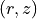
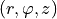
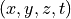

Fluence¶
Fluence detector is used to obtain the spatial distribution of the
energy (packet weights) deposited into the sample through the process of
absorption or optionally the fluence rate.
Three different implementations of the fluence detector are
available in the xopto.mcbase.mcfluence module:
FluenceRz- Radially symmetric implementation .FluenceCyl- Implementation in cylindrical coordinates .Fluence- Implementation in Cartesian coordinates .
.
The following are time-resolved variants of the above fluence detectors:
FluenceRzt- Implementation in Cartesian coordinates wit additional temporal axis .FluenceCylt- Implementation in Cartesian coordinates wit additional temporal axis .Fluencet- Implementation in Cartesian coordinates wit additional temporal axis .
The observed volume voxelization is axis-aligned and allows independent
adjustment of the voxel size along the x, y and z axis for
Fluence, along r, φ and z axis for .
FluenceCyl and along the r and z axis for
FluenceRz.
The time-resolved variants of the fluence detectors have an additional
temporal (t) axis. The time along the temporal axis is measured in seconds.
The fluence accumulators utilize NumPy arrays and follow C-indexing order, where the last index represents the most rapidly changing memory location:
FluenceRz-[z, r]FluenceCyl-[z, φ, r]Fluence-[z, y, x]FluenceRzt-[z, r, t]FluenceCylt-[z, φ, r, t]Fluencet-[z, y, x, t]
The Fluence,
Fluencet,
FluenceCyl,
FluenceCylt,
FluenceRz and
FluenceRzt
classes are also conveniently
imported into the xopto.mcml.mcfluence, xopto.mccyl.mcfluence
xopto.mcvox.mcfluence modules.
The fluence detector allows collection of unscaled deposited / absorbed
packet weights or of the fluence rate where the deposited packet weights are
scaled by the inverse of the absorption coefficient. The collection method can
be selected through the mode argument that should be set
to ‘deposition’ (default) for the raw weights and ‘fluence’
for the fluence rate.
In the following example we voxelize a volume that extends along the x axis from -5 to 5 mm, along the y axis from -5 to 5 mm and along the z axis from 0 to 10 mm. The voxel size along all the three axis is set to 0.1 mm.
from xopto.mccyl import mc
fluence = mc.mcfluence.Fluence(
xaxis=mc.mcfluence.Axis(-5.0e-3, 5.0e-3, 100),
yaxis=mc.mcfluence.Axis(-5.0e-3, 5.0e-3, 100),
zaxis=mc.mcfluence.Axis(0.0, 10.0e-3, 100)
)
The Axis instances along the x, y and z
axis can be accessed through the
xaxis,
yaxis and
zaxis properties. Likewise, the
centers of the voxels along the x, y and z axis can be accessed through the
x,
y and
z properties.
xaxis = fluence.xaxis
yaxis = fluence.yaxis
zaxis = fluence.zaxis
x_centers = fluence.x # or as xaxis.centers
y_centers = fluence.y # or as yaxis.centers
z_centers = fluence.z # or as zaxis.centers
The fluence data are stored in a 3D numpy array that can be accessed through the
raw or
data properties. The individual
voxels are addressed / sliced as data[z_slice, y_slice, x_slice].
Note
The values returned by the raw
property are the unscaled sums of deposited / absorbed photon packet weights
while the values returned by the data
property are scaled by the inverse of the product between the voxel volume and
the number of launched packets. The time-resolved variants of fluence
detectors scale the values returned by
data
with the inverse of the product between the voxel volume, the number of
launched packets and the corresponding time interval.
Also note that the voxel size is constant
for the Fluence but changes with location
for the FluenceRz and
FluenceCyl.
After completing the Monte Carlo simulation, the fluence accumulator can be
viewed using the plot() method. The
method allows slicing across the voxelized volume along one of the main
coordinate axis. Use the axis parameter to set the coordinate
axis:
axis=’x’slice along the x axis,axis=’y’slice along the y axis,axis=’z’slice along the z axis.
To show integral projections along one of the main coordinate axis call with:
axis=’xproj’for an integral projection along the x axis,axis=yprojfor an integral projection along the y axis,axis=’zproj’for an integral projection along the z axis.
The slices can be viewed in a linear or logarithmic scale. Call with
scale=’lin’ to show the slices in a linear intensity scale.
By default the color coding of each slice is automatically scaled to the range
of weights (autoscale=True).
fluence.plot(axis='z') # slice along the z axis
fluence.plot(axis='y') # slice along the y axis
fluence.plot(axis='x') # slice along the x axis
fluence.plot(axis='zproj') # integral projection / sum along the z axis
fluence.plot(axis='yproj') # integral projection / sum along the y axis
fluence.plot(axis='xproj') # integral projection / sum along the x axis